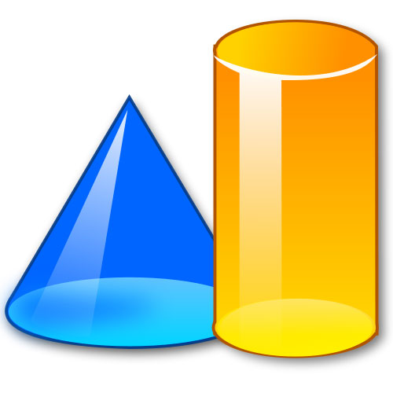
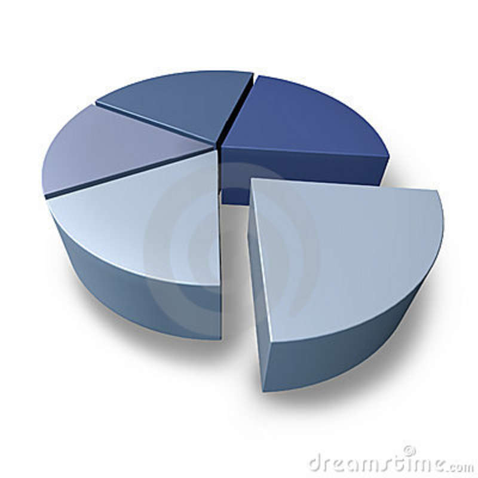

3D shapes formulae
Images
More about Area
Basic Formulae
2D shapes Formulae
3D shapes Formulae
Trignometry Formulae
Probability formulae
Arithmatic progession

Cube
- Lateral surface area=4a2
- Total surface area = 6a2
- Volume = a3
where a=side of cube..
Cuboid
- Lateral surface area = 2(l + b).h
- Total surface area = 2(lb + bh + hl)
- Volume = lbh
where l=length , b=Breadth , h=height
Sphere
- Surface area = 4. pi .r2
- Volume = (4/3). pi .r3
where r =Radius

Hemisphere
- Curved surface area = 2. pi . r2
- Total surface area = 3. pi . r2
where r = Radius
Cylinder
- Curved surface area = 2. pi . r. h
- Total surface area = (2. pi . r 2) + (2. pi. r.h)
- Volume= pi. r2. h
where r=radius , h=Height
- Curved surface area = pi . r. l , where l2=r2 + r2
- Total surface area = (pi . r 2) + ( pi. r. l)
- Volume=(1/3) . pi. r2. h
where r=Radius , l=Slant height , h=Height..
- Curved surface area = pi. l. (R + r)
- Total surface area = pi. l. (R + r) + pi. (R2 + r2)
- Volume = (1/3) . pi . h. (R2 + r2 +Rr)
where l=slant height , h=height , R=big radius , r=small radius..
Area is a quantity that expresses the extent of a two-dimensional surface or shape, or planar lamina, in the plane. Area can be understood as the amount of material with a given thickness that would be necessary to fashion a model of the shape, or the amount of paint necessary to cover the surface with a single coat.[1] It is the two-dimensional analog of the length of a curve (a one-dimensional concept) or the volume of a solid (a three-dimensional concept).
The area of a shape can be measured by comparing the shape to squares of a fixed size.[2] In the International System of Units (SI), the standard unit of area is the square metre (written as m2), which is the area of a square whose sides are one metre long.[3] A shape with an area of three square metres would have the same area as three such squares. In mathematics, the unit square is defined to have area one, and the area of any other shape or surface is a dimensionless real number.
There are several well-known formulas for the areas of simple shapes such as triangles, rectangles, and circles. Using these formulas, the area of anypolygon can be found by dividing the polygon into triangles.[4] For shapes with curved boundary, calculus is usually required to compute the area. Indeed, the problem of determining the area of plane figures was a major motivation for the historical development of calculus.[5]
For a solid shape such as a sphere, cone, or cylinder, the area of its boundary surface is called the surface area.[1][6] Formulas for the surface areas of simple shapes were computed by the ancient Greeks, but computing the surface area of a more complicated shape usually requires multivariable calculus.
Area plays an important role in modern mathematics. In addition to its obvious importance in geometry and calculus, area is related to the definition of determinants in linear algebra, and is a basic property of surfaces in differential geometry.[7] In analysis, the area of a subset of the plane is defined using Lebesgue measure,[8] though not every subset is measurable.[9] In general, area in higher mathematics is seen as a special case of volume for two-dimensional regions.[1]
Area can be defined through the use of axioms, defining it as a function of a collection of certain plane figures to the set of real numbers. It can be proved that such a function exists.